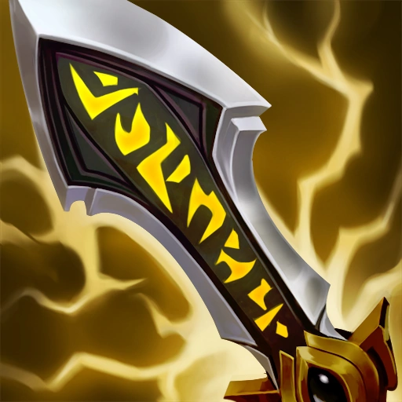

Historia De Draven
DRAVEN : EL EJECUTOR GLORIOSO
Draven, un joven huérfano de las calles de Basilich, mostraba ya de niño un carácter testarudo y bravucón, y se veía envuelto constantemente en refriegas con niños callejeros y peligrosos matones de la ciudad. A pesar de que el joven confiaba mucho en sus capacidades (quizás demasiado), lo cierto es que probablemente no hubiera sobrevivido a la infancia sin la ayuda de su hermano mayor, Darius, que se encargaba siempre de zanjar las peleas que el chiquillo comenzaba.
Cuando Basilich cayó en manos del imperio noxiano, estos dos hermanos llamaron la atención de un capitán llamado Cyrus, después de que Draven tratara sin mucho éxito de acabar con su vida. El espíritu guerrero de los chavales lo dejó impresionado, y decidió permitir que se unieran a las filas noxianas.
Durante años, los hermanos lucharon como parte del batallón de Cyrus. No obstante, aunque Darius se adaptó rápidamente a su nuevo estilo de vida, Draven se aburría cada vez más. No cabía duda de que era un hábil luchador, pero la monotonía de la vida del soldado, en su opinión, conllevaba demasiado esfuerzo, muy pocas recompensas y aún menos gloria individual.
Como era de esperar, Darius acabó ascendiendo hasta ser comandante de su propio batallón, y Draven se unió a él. Pronto descubrió con amargura que servir a su hermano resultaba aún más duro y menos gratificante que su vida anterior.
Hay quienes dicen que Draven decidió marcharse del batallón; otros afirman que lo echaron. Sea como fuere, había desarrollado una serie de habilidades como campeón y duelista que eran de lo más preciadas y, durante la invasión de Jonia, varios comandos lo persuadieron para que se uniera a ellos. Tras este periodo, acabó con un contrato nada desdeñable en los fosos de gladiadores.
Durante siglos, los justicieros de las arenas habían desempeñado un papel fundamental en Noxus, pues sus competiciones servían tanto para castigar a criminales como para solucionar rencillas entre nobles. Draven estaba decidido a hacerse allí con las riquezas, la adoración y el renombre que creía merecer. No obstante, con varios frentes de guerra activos a su alrededor, los noxianos de a pie estaban perdiendo poco a poco el interés por este espectáculo. A medida que la adoración del público iba decayendo, también lo hacía el entusiasmo de Draven. Cada vez pasaba más tiempo en las tabernas de mala muerte y salas de juego de la capital.
Cuando el general Jericho Swain dio con él, estaba acabado y en la ruina.
Swain había trazado un plan para recuperar la gloria perdida de Noxus y, para cumplirlo, necesitaba la ayuda de Draven. En realidad, es posible que Swain solo lo reclutara para asegurarse de contar con el apoyo de su hermano. En cualquier caso, Draven resultó ser esencial en las maquinaciones de Swain: deshacerse del mismísimo gran general, Boram Darkwill.
Celebrando su triunfo junto a Swain, Draven esbozó su primera sonrisa en meses al oír los vítores del pueblo noxiano.
Sin embargo, tenía un deber que cumplir. Durante las semanas que siguieron al golpe de estado, una parte importante de la nobleza se negó a reconocer a Swain como el nuevo sucesor, así que se los sentenció a muerte en las arenas.
Uno de los condenados consiguió librarse de los grilletes antes de la ejecución. Siguiendo su instinto, como de costumbre, Draven saltó del palco desde el que observaba el espectáculo y le lanzó un par de hachas al hombre, que cayó fulminado. Tras un instante de silencio y estupefacción, la multitud estalló en vítores. Draven recuperó sus hachas y las giró en el aire con vigor, luciéndose ante sus nuevos admiradores y saboreando los aplausos.
Así es como se convirtió en el Ejecutor Glorioso, alguien capaz de convertir una rutina cotidiana en un espectáculo al que acudían grandes multitudes.
Pronto, un empresario tan diminuto como innovador, cansado de invertir su fortuna en entrenar y hospedar a justicieros para que acabaran muertos en un espectáculo que ya no era lo que fue, decidió ponerse en contacto con él para plantearle una idea. ¿Y si combinaran el dramatismo de las peleas clásicas de los fosos con el talento natural para el espectáculo de Draven?
Los justicieros no tardaron en convertirse en personajes a la par que combatientes. Cada uno de ellos tenía una elaborada historia, un estilo de lucha y una personalidad excéntrica con la que deleitar al público. Los combates eran sangrientos (al fin y al cabo, estaban en Noxus), pero no solían ser letales como antaño. Las rivalidades, bravuconadas e intrigas de los justicieros más célebres se convirtieron en leyendas por todo el imperio, y Draven era la mayor de todas ellas.
Durante un tiempo disfrutó de la vida, enterrado en invitaciones a fiestas y banquetes y mezclándose con la gente más adinerada e influyente del nuevo Noxus de Swain. Incluso se reconcilió con Darius. En ocasiones, viajaba a los frentes de guerra para derrotar a algún campeón o general enemigo en combate singular.
Sin embargo, Draven vuelve a sentirse inquieto. Tiene todo lo que jamás había imaginado y más aún, pero ahora sueña con conseguir que el mundo entero coree su nombre.
Draven Dentro De League Of legends
Build Optima De darven
Primer Item

Botas
Segundo Item
Tercer Item

Items Situacionales